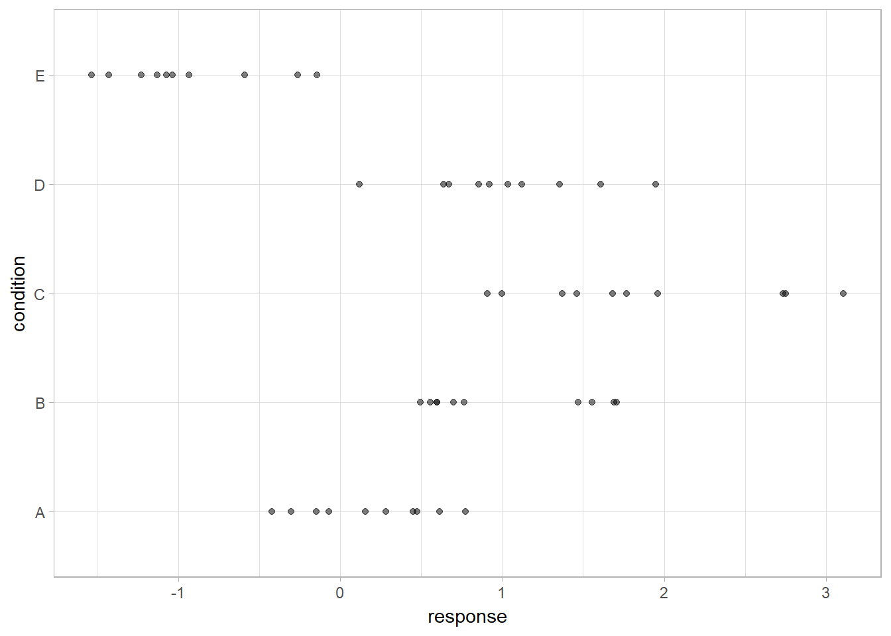
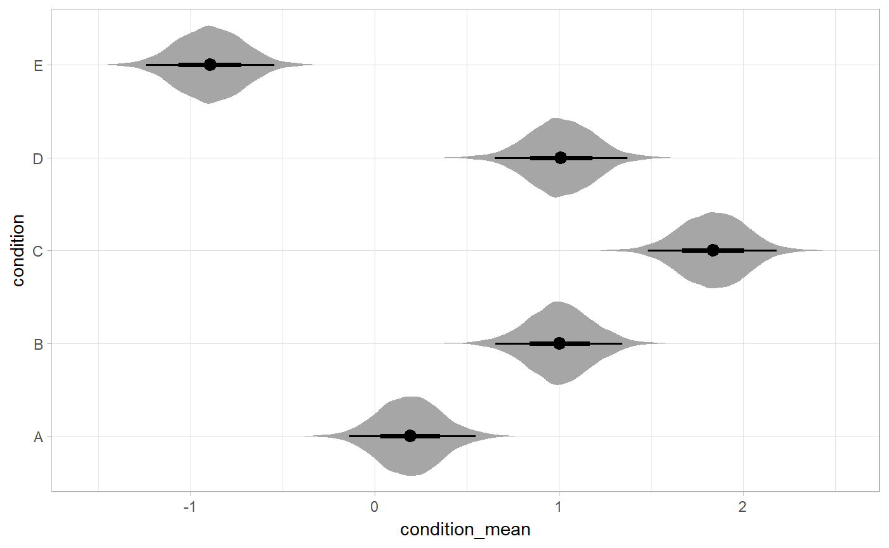
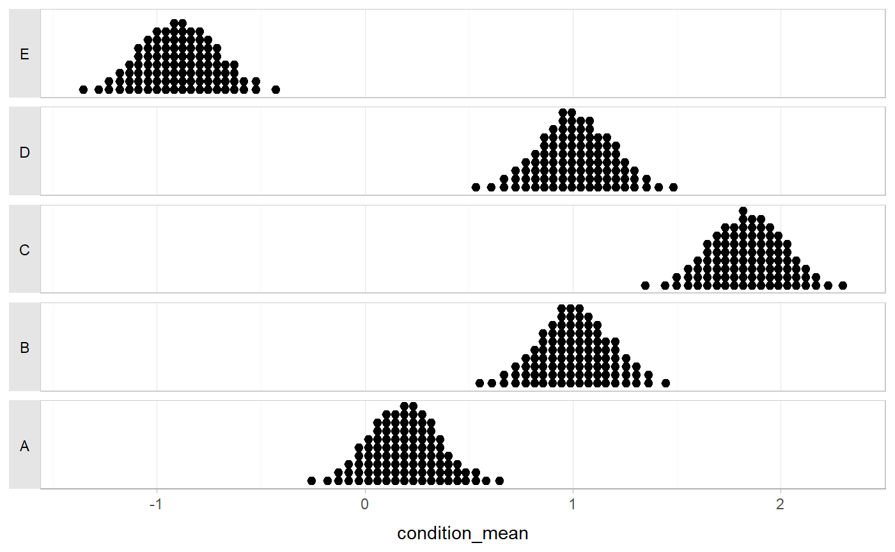
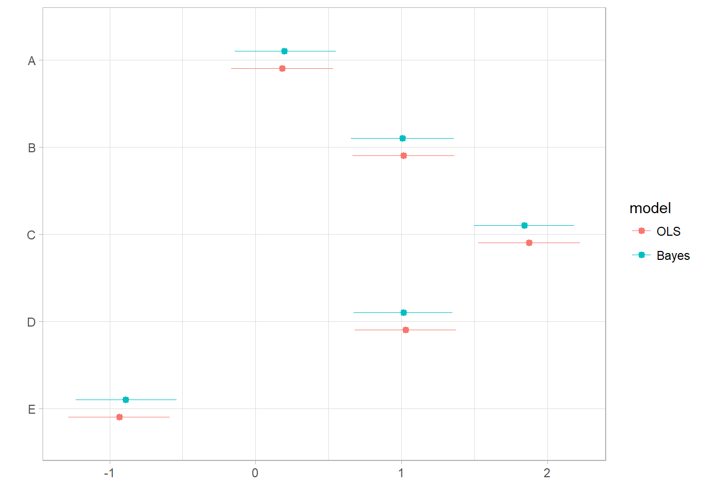
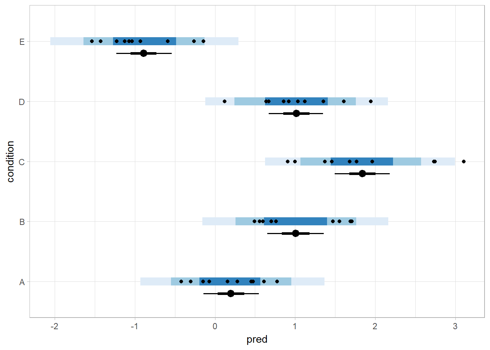
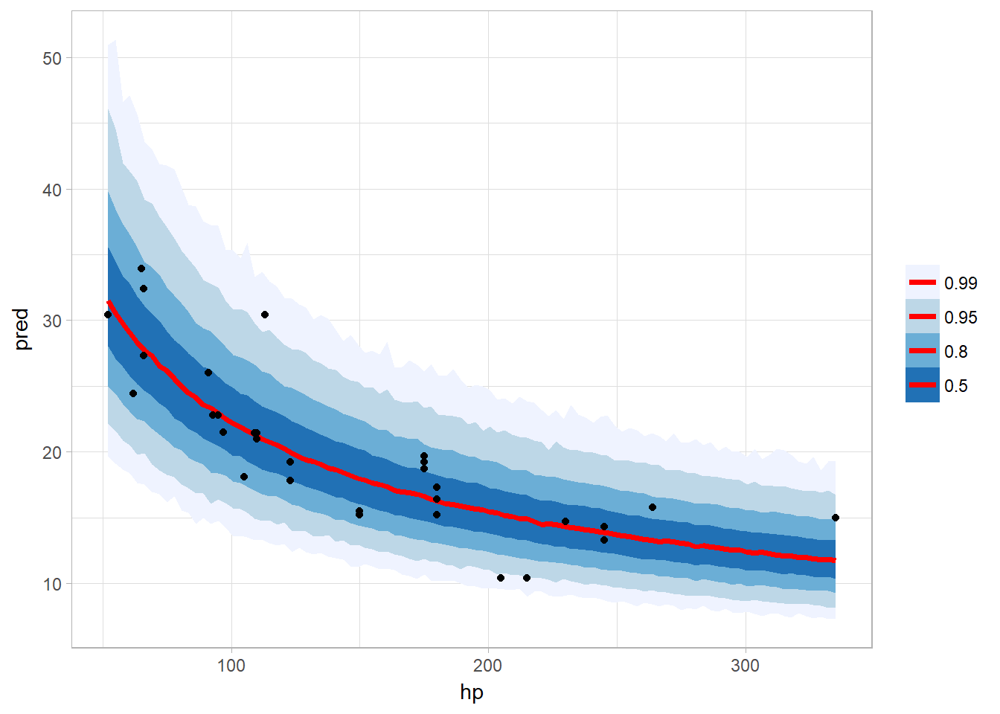
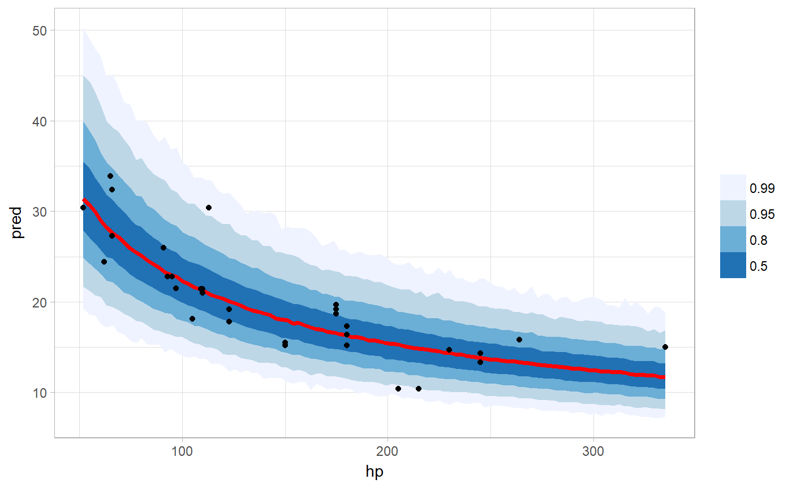

Matthew Kay, University of Michigan, mjskay@umich.edu
Tidy data frames (one observation per row) are particularly convenient for use in a variety of R data manipulation and visualization packages. However, when using MCMC / Bayesian samplers like JAGS or Stan in R, we often have to translate this data into a form the sampler understands, and then after running the model, translate the resulting sample into a more tidy format for use with other R functions. tidybayes aims to simplify these two common (often tedious) operations:
Composing data for use with the sampler. This often means translating data from a
data.frameinto alist, making surefactorsare encoded as numerical data, adding variables to store the length of indices, etc. This package helps automate these operations using thecompose_datafunction, which automatically handles data types likenumeric,logical,factor, andordinal, and allows easy extensions for converting other datatypes into a format the sampler understands by providing your own implementation of the genericas_data_list.Extracting tidy samples from the sampler. This often means extracting indices from parameters with names like
"b[1,1]","b[1,2]"into separate columns of a data frame, likei = c(1,1,..)andj = c(1,2,...). More tediously, sometimes these indices actually correspond to levels of a factor in the original data; e.g."x[1]"might correspond to a value ofxfor the first level of some factor. We provide several straightforward ways to convert samples of a variable with indices into useful long-format (“tidy”) data frames, with automatic back-conversion of common data types (factors, logicals) using thespread_samplesandgather_sampelsfunctions, including automatic recovery of factor levels corresponding to variable indices. In most cases this kind of long-format data is much easier to use with other data-manipulation and plotting packages (e.g.,dplyr,tidyr,ggplot2) than the format provided by default from the sampler.
tidybayes also provides some additional functionality for data manipulation and visualization tasks common to many models:
Extracting tidy fits and predictions from models. For models like those provided by
rstanarmandbrms,tidybayesprovides a tidy analog of thefittedandpredictfunctions, calledadd_fitted_samplesandadd_predicted_samples. These functions are modeled after themodelr::add_predictionsfunction, and turn a grid of predictions into a long-format data frame of samples from either the fits or predictions from a model. These functions make it straightforward to generate arbitrary fit lines from a model.Summarizing posterior distributions from models. The
point_intervalfamily of functions (mean_qi,median_qi,mode_hdi, etc) are methods for generating estimates and intervals that are designed with tidy workflows in mind. They can generate estimates plus an arbitrary number of probability intervals from tidy data frames of samples, they return tidy data frames, and they respect data frame groups.-
Visualizing posteriors, which when many estimates are involved can be done succinctly using eye plots (aka raindrop plots or violin plots). Eye plots are a compact representation of posterior densities that combines credible intervals and point estimates with a symmetric visualization of density, making for straightforward and compact comparison of many data points. The
geom_eyeandgeom_eyehfunctions provide a convenient way to generate eye plots usingggplot2. If you prefer intervals plus densities (instead of violins), the half-eye plot is also easily constructing usinggeom_halfeyeh.The focus on tidy data suitable for use with
ggplotmeans that existinggeoms (likegeom_pointrangeandgeom_linerange) can also be used easily to construct custom plots. Modified versions of those vanilla geoms are also provided (e.g.,geom_pointintervalandgeom_pointintervalh) with sensible defaults for tasks like plotting multiple intervals per estimate. Comparing a variable across levels of a factor, which often means first generating pairs of levels of a factor (according to some desired set of comparisons) and then computing a function over the value of the comparison variable for those pairs of levels. Assuming your data is in the format returned by
spread_samples, thecompare_levelsfunction allows comparison across levels to be made easily.
Finally, tidybayes aims to fit into common workflows through compatibility with other packages:
Compatibility with other tidy packages. Default column names in the output have also been chosen for compatibility with
broom::tidy, which makes comparison with estimates from non-Bayesian models straightforward.Compatibility with non-tidy packages. The
unspread_samplesandungather_samplesfunctions invertspread_samplesandgather_samples, aiding compatiblity with other Bayesian plotting packages (notablybayesplot).
Supported model types
tidybayes aims to support a variety of models with a uniform interface. Currently supported models include rstan, coda::mcmc and coda::mcmc.list, runjags, rstanarm, brms, MCMCglmm, and anything with its own as.mcmc.list implementation. If you install the tidybayes.rethinking package, models from the rethinking package are also supported.
Installation
You can install the latest development version from GitHub with these R commands:
install.packages("devtools")
devtools::install_github("mjskay/tidybayes")Examples
This example shows the use of tidybayes with the Stan modeling language; however, tidybayes supports many other samplers and models, such as JAGS, brm, rstanarm, and (theoretically) any model type supported by coda::as.mcmc.list.
library(magrittr)
library(dplyr)
library(ggplot2)
library(ggstance)
library(rstan)
library(tidybayes)
library(lsmeans)
library(broom)
library(brms)
library(modelr)
library(forcats)Imagine this dataset:
set.seed(5)
n = 10
n_condition = 5
ABC =
data_frame(
condition = rep(c("A","B","C","D","E"), n),
response = rnorm(n * 5, c(0,1,2,1,-1), 0.5)
)
ABC %>%
ggplot(aes(x = response, y = condition)) +
geom_point(alpha = 0.5) +
ylab("condition")
A hierarchical model of this data might estimate an overall mean across the conditions (overall_mean), the standard deviation of the condition means (condition_mean_sd), the mean within each condition (condition_mean[condition]) and the standard deviation of the responses given a condition mean (response_sd):
data {
int<lower=1> n;
int<lower=1> n_condition;
int<lower=1, upper=n_condition> condition[n];
real response[n];
}
parameters {
real overall_mean;
vector[n_condition] condition_zoffset;
real<lower=0> response_sd;
real<lower=0> condition_mean_sd;
}
transformed parameters {
vector[n_condition] condition_mean;
condition_mean = overall_mean + condition_zoffset * condition_mean_sd;
}
model {
response_sd ~ cauchy(0, 1); # => half-cauchy(0, 1)
condition_mean_sd ~ cauchy(0, 1); # => half-cauchy(0, 1)
overall_mean ~ normal(0, 5);
condition_zoffset ~ normal(0, 1); # => condition_mean ~ normal(overall_mean, condition_mean_sd)
for (i in 1:n) {
response[i] ~ normal(condition_mean[condition[i]], response_sd);
}
}
Composing data for input to model: compose_data
We have compiled and loaded this model into the variable ABC_stan. Rather than munge the data into a format Stan likes ourselves, we will use the tidybayes::compose_data function, which takes our ABC data frame and automatically generates a list of the following elements:
-
n: number of observations in the data frame -
n_condition: number of levels of the condition factor -
condition: a vector of integers indicating the condition of each observation -
response: a vector of observations
So we can skip right to modeling:
m = sampling(ABC_stan, data = compose_data(ABC), control = list(adapt_delta=0.99))
Getting tidy samples from the model: spread_samples
We decorate the fitted model using tidybayes::recover_types, which will ensure that numeric indices (like condition) are back-translated back into factors when we extract data:
m %<>% recover_types(ABC)Now we can extract parameters of interest using spread_samples, which automatically parses indices, converts them back into their original format, and turns them into data frame columns. This function accepts a symbolic specification of Stan variables using the same syntax you would to index columns in Stan. For example, we can extract the condition means and the residual standard deviation:
m %>%
spread_samples(condition_mean[condition], response_sd) %>%
head(15) # just show the first few rows## # A tibble: 15 x 5
## # Groups: condition [5]
## .chain .iteration condition condition_mean response_sd
## <int> <int> <fctr> <dbl> <dbl>
## 1 1 1 A -0.1206604 0.6131074
## 2 1 1 B 1.0043807 0.6131074
## 3 1 1 C 1.5011137 0.6131074
## 4 1 1 D 1.1089315 0.6131074
## 5 1 1 E -1.1163084 0.6131074
## 6 1 2 A 0.2778306 0.4997878
## 7 1 2 B 0.7552125 0.4997878
## 8 1 2 C 1.8340128 0.4997878
## 9 1 2 D 0.7040865 0.4997878
## 10 1 2 E -1.1510277 0.4997878
## 11 1 3 A 0.0078763 0.4952302
## 12 1 3 B 1.2779759 0.4952302
## 13 1 3 C 2.0680137 0.4952302
## 14 1 3 D 1.3867664 0.4952302
## 15 1 3 E -0.7519878 0.4952302The condition numbers are automatically turned back into text (“A”, “B”, “C”, …) and split into their own column. A long-format data frame is returned with a row for every iteration \(\times\) every combination of indices across all variables given to spread_samples; for example, because response_sd here is not indexed by condition, within the same iteration it has the same value for each row corresponding to a different condition (some other formats supported by tidybayes are discussed in vignette("tidybayes"); in particular, the format returned by gather_samples).
Plotting posteriors as eye plots: geom_eye / geom_eyeh
Automatic splitting of indices into columns makes it easy to plot the condition means here. We will employ the tidybayes::geom_eyeh geom (horizontal version of tidybayes::geom_eye), which combines a violin plot of the posterior density, mean, and 95% quantile interval to give an “eye plot” of the posterior. The point and interval types are customizable using the point_interval family of functions. A “half-eye” plot (non-mirrored density) is also available as tidybayes::geom_halfeyeh.
m %>%
spread_samples(condition_mean[condition]) %>%
ggplot(aes(x = condition_mean, y = condition)) +
geom_eyeh()
Model comparison via compatibility with broom
The output of the tidybayes::mean_qi function (and other point_interval functions) is compatible with broom::tidy, so we can compare parameter estimates easily to models supported by broom.
For example, let’s compare to ordinary least squares (OLS) regression:
linear_estimates =
lm(response ~ condition, data = ABC) %>%
lsmeans(~ condition) %>%
tidy() %>%
mutate(model = "OLS")
linear_estimates## condition estimate std.error df conf.low conf.high model
## 1 A 0.1815842 0.173236 45 -0.1673310 0.5304993 OLS
## 2 B 1.0142144 0.173236 45 0.6652993 1.3631296 OLS
## 3 C 1.8745839 0.173236 45 1.5256687 2.2234990 OLS
## 4 D 1.0271794 0.173236 45 0.6782642 1.3760946 OLS
## 5 E -0.9352260 0.173236 45 -1.2841411 -0.5863108 OLSThe output from mean_qi when given a single parameter uses conf.low and conf.high for interval names so that it lines up with tidy:
bayes_estimates = m %>%
spread_samples(condition_mean[condition]) %>%
mean_qi(estimate = condition_mean) %>%
mutate(model = "Bayes")
bayes_estimates## # A tibble: 5 x 6
## # Groups: condition [5]
## condition estimate conf.low conf.high .prob model
## <fctr> <dbl> <dbl> <dbl> <dbl> <chr>
## 1 A 0.1968434 -0.1427452 0.5482592 0.95 Bayes
## 2 B 1.0075166 0.6539753 1.3588999 0.95 Bayes
## 3 C 1.8420086 1.4953866 2.1836275 0.95 Bayes
## 4 D 1.0153748 0.6710544 1.3494475 0.95 Bayes
## 5 E -0.8916102 -1.2320089 -0.5412994 0.95 BayesThis makes it easy to bind the two estimates together and plot them:
bind_rows(linear_estimates, bayes_estimates) %>%
ggplot(aes(y = condition, x = estimate, xmin = conf.low, xmax = conf.high, color = model)) +
geom_pointrangeh(position = position_dodgev(height = .3))
Shrinkage towards the overall mean is visible in the Bayesian estimates.
Comptability with broom::tidy also gives compatibility with dotwhisker::dwplot:
bind_rows(linear_estimates, bayes_estimates) %>%
rename(term = condition) %>%
dotwhisker::dwplot()
Posterior prediction and complex custom plots
The tidy data format returned by spread_samples also facilitates additional computation on parameters followed by the construction of more complex custom plots. For example, we can generate posterior predictions easily, and use the .prob argument of mean_qih to generate several intervals from the posterior predictions, then plot them alongside parameter estimates and the data:
m %>%
spread_samples(condition_mean[condition], response_sd) %>%
mutate(pred = rnorm(n(), condition_mean, response_sd)) %>%
ggplot(aes(y = condition)) +
# posterior predictive intervals
stat_summaryh(aes(x = pred, color = ordered(-...prob..)), size = 4,
fun.data = mean_qih, fun.args = list(.prob = c(.95, .8, .5)), geom = "linerangeh") +
scale_color_brewer(guide = FALSE) +
# mean and qi of condition mean
stat_summaryh(aes(x = condition_mean), fun.data = mean_qih, position = position_nudge(y = -0.2)) +
# data
geom_point(aes(x = response), data = ABC)
This plot shows 95% quantile credible intervals of posterior mean for each condition (point + black line); 95%, 80%, and 50% posterior predictive intervals (blue); and the data.
Fit curves
For models that support it (like rstanarm and brms models), We can also use the add_fitted_samples or add_predicted_samples functions to generate posterior fits or predictions. Combined with the functions from the modelr package, this makes it easy to generate fit curves.
Let’s fit a slightly naive model to miles per gallon versus horsepower in the mtcars dataset:
m_mpg = brm(mpg ~ log(hp), data = mtcars, family = lognormal)Now we will use modelr::data_grid plus tidybayes::add_predicted_samples to generate a fit curve with multiple probability bands:
mtcars %>%
data_grid(hp = seq_range(hp, n = 100)) %>%
add_predicted_samples(m_mpg) %>%
median_qi(.prob = c(.99, .95, .8, .5)) %>%
ggplot(aes(x = hp)) +
geom_lineribbon(aes(y = pred)) +
geom_point(aes(y = mpg), data = mtcars) +
scale_fill_brewer()
geom_lineribbon(aes(y = pred)) in the above code is a shortcut for something like:
geom_ribbon(aes(ymin = conf.low, ymax = conf.high, fill = forcats::fct_rev(ordered(.prob)))) +
geom_line(aes(y = pred), color = "red", size = 1.25)Because this is all tidy data, if you wanted to build a model with interactions among different categorical variables (say a different curve for automatic and manula transmissions), you can easily generate predictions faceted over that variable (say, different curves for different transmission types). Then you could use the existing faceting features built in to ggplot to plot them.
Such a model might be:
m_mpg_am = brm(mpg ~ log(hp)*am, data = mtcars, family = lognormal)Then we can generate and plot predictions as before (differences from above are highlighted as comments):
mtcars %>%
data_grid(hp = seq_range(hp, n = 100), am) %>% # add am to the prediction grid
add_predicted_samples(m_mpg_am) %>%
median_qi(.prob = c(.99, .95, .8, .5)) %>%
ggplot(aes(x = hp)) +
geom_lineribbon(aes(y = pred)) +
geom_point(aes(y = mpg), data = mtcars) +
scale_fill_brewer() +
facet_wrap(~ am) # facet by am
See vignette("tidybayes") for a variety of additional examples and more explanation of how it works.
Feedback and issues
I welcome feedback, suggestions, and issues! Contact me at mjskay@umich.edu. If you have found a bug, please file it here with minimal code to reproduce the issue.
tidybayes grew out of helper functions I wrote to make my own analysis pipelines tidier. Over time it has expanded to cover more use cases I have encountered, but I would love to make it cover more!